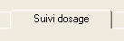
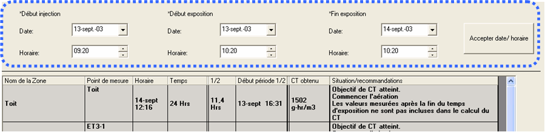
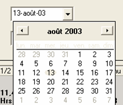
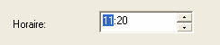
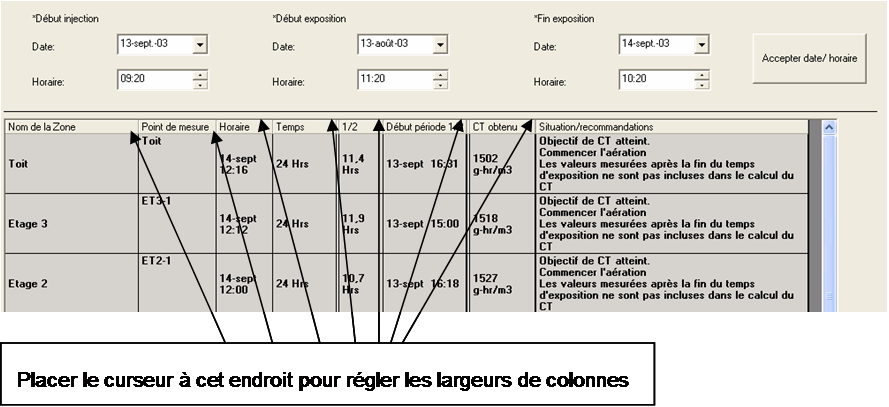
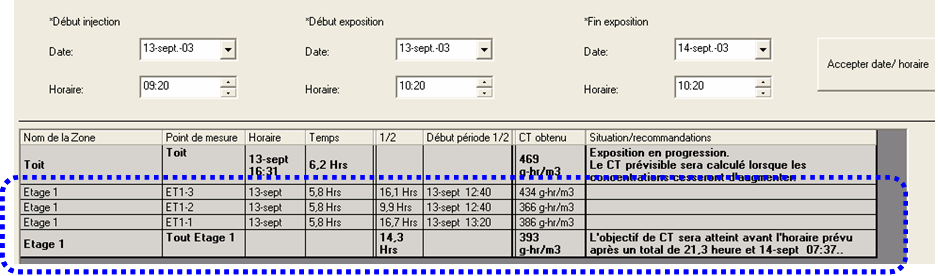
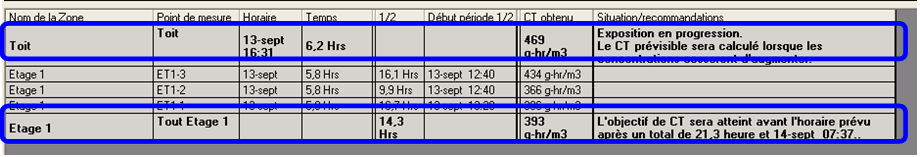
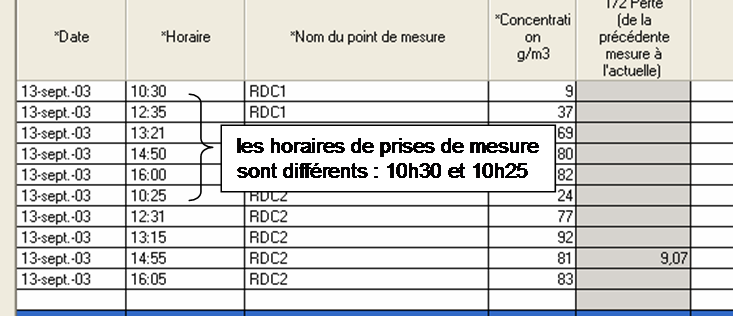
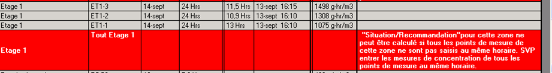

Onglet Suivi dosage
Une fois des mesures de concentrations suffisantes saisies dans l'onglet
Saisie des Concentrations, le fumigateur peut faire le point sur la fumigation
et recueillir des recommandations dans l'onglet Suivi dosage.

L'onglet Suivi dosage comprend
deux sections : des champs de saisie utilisateurs (Début Injection, Début Exposition et Fin Exposition) et le tableau Situation. Les champs Début injection, Début exposition et Fin Exposition sont modifiables par le fumigateur. Toutes les informations du tableau Situation sont calculées par Le Fumiguide ProFume en fonction des mesures de concentrations et des horaires de Début exposition et Fin Exposition. Des Situation/recommandations pour obtenir l’objectif de dosage sont fondées sur le Plan de dosage et des mesures de concentrations saisies dans l'onglet Saisie des concentrations.

Ces termes de champs
de saisie utilisateur sont définis comme ci-dessous :
Début injection horaire d'injection du fumigant dans une enceinte ou chambre. Doit précéder l'horaire Début exposition.
Début
exposition horaire à laquelle l'accumulation de CT (dosage) commence.
Doit succéder à Début injection et précéder Fin Exposition. Les lectures de
concentration avant Début exposition ne sont pas incluses dans l'accumulation
CT.
Fin exposition horaire à laquelle
l'accumulation de CT (dosage) s'achève. Doit succéder à Début exposition. Les
lectures de concentration après Fin Exposition ne sont pas incluses dans
l'accumulation de CT.
Saisie de Début injection, Début exposition et Fin
exposition
Le format du champ Date est jj:mois:aa (par exemple 04-Mar-03). Le format du champ Heure est hh:mm: (par exemple 10:15).
Les dates et horaires des champs Début injection, Début exposition et Fin exposition doivent être saisies initialement dans l'onglet Saisie des concentrations. Les dates et horaires Début Injection, Début Exposition et Fin Exposition doivent être saisies avant la saisie de toute donnée de monitoring. Les dates et horaires sont ensuite copiées automatiquement, de l'onglet Mesures de concentrations à l'onglet Suivi dosage.
Les mesures de concentrations d'une zone doivent être saisies dans l'onglet Saisie des concentrations pour générer toute Situation/recommandation dans l'onglet Suivi dosage.
Changer Début injection, Début exposition et Fin
exposition Les dates et horaires de Début Injection, Début Exposition et Fin Exposition peuvent être modifiées à tout moment (en présumant qu'elles aient été saisies dans l'onglet Saisie des concentrations initialement).
La modification de la date ou de l'horaire dans Début Injection, Début Exposition ou Fin Exposition dans l'onglet Suivi dosage ou Saisie des concentrations change automatiquement cette valeur dans l'autre onglet.
Plusieurs
méthodes permettent de changer la date et l'horaire.
1) Sélectionnez le jour, le mois
ou l'année dans le champ de date et saisissez la nouvelle valeur.
2) Dans le
champ Date, sélectionnez la flèche à droite pour ouvrir la barre de défilement
et ouvrir un calendrier. Cliquez sur la date souhaitée.
3) Dans le champ Horaire, cliquez sur les heures, les minutes à changer. Cliquez sur les flèches haut ou bas pour changer les valeurs de l'horaire.


Les horaires Début Exposition et Fin Exposition déterminent les temps d'exposition et définissent les intervalles de temps sur lesquelles l'accumulation CT est calculée.
Le Temps d'exposition doit
être identique dans les onglets Suivi dosage et Plan de dosage pour assurer la
précision des instructions Situation/Recommandation.
Note : La
durée d'exposition devra toujours être identique pour les onglets Plan de dosage
et Suivi dosage. Si le temps d'exposition est changé dans l'onglet Suivi dosage,
en modifiant l'horaire Début exposition ou Fin Exposition, le champ Durée
d'exposition dans l'onglet Plan de dosage sera modifié automatiquement pour
refléter le temps d'exposition de l'onglet Suivi dosage. Refaites les calculs
dans Plan de dosage après le changement de Durée d'exposition.
Colonnes dans le tableau Suivi dosage Pour
redimensionner les colonnes, cliquez sur une ligne de séparation entre colonnes dans la ligne d'en-tête et ajustez à la taille désirée.

Nom de la Zone –
Nom de l'ensemble de l'enceinte ou d'une zone ou d'une sous-section de
l'enceinte totale à fumiger. Il est défini dans le Plan de dosage et ne peut
être changé que dans ce dernier.
Une zone (Area) peut inclure plusieurs
points de mesure. Les Situations/recommandations sont présentées uniquement par
Zone, et non par Point de mesure individuel.
Une ligne "Toutes les
zones" est créée automatiquement par le
Fumiguide, représentant les valeurs moyennes 1/2 Perte, CT obtenu et CT
prévisible pour les points de mesure d'une zone. Cette ligne porte un nom de
zone en gras (entouré ci-après) précédé de "Tous"
désignant que ceci est la ligne Situation/Recommandation pour cette
zone.
Les Situations/recommandations sont basées sur la moyenne des
concentrations de points de mesure pour cette zone. Si la zone contient
plusieurs points de mesure, le nom de zone n'est pas affiché en gras pour
chacune des lignes de points de mesure.
Point de mesure – Les noms de points de
mesure, définis dans l'onglet Plan de monitoring. Une zone de l'espace fumigé
peut avoir plusieurs points de mesure. Dans la ligne de moyenne de points de
mesure, 1/2 Perte, CT obtenu et CT prévisible sont exprimées en moyenne et dans
le cas d’une Situation/Recommandation des points de mesure dans une zone, le nom
du point de mesure sera "Tout" suivi du nom de la zone.

Termes
et définitions supplémentaires dans cet onglet :
Horaire dernière saisie
– Date et horaire de la dernière saisie de données (concentration) pour
un point de mesure.
Temps écoulé – Nombre d'heures entre Début exposition et Horaire dernière saisie (concentration de fumigant)
1/2 Perte – temps de demi-Perte calculé à
partir du dernier pic de concentration de fumigant à l’horaire de la dernière saisie. Dans la ligne "Toutes zones", 1/2 Perte est la valeur moyenne de 1/2 Perte des points de mesure individuels de cette zone.
Début période 1/2 Perte
– Horaire du pic (maximum) de concentration le plus récent pour un point de mesure.
Fin
de la période pour la 1/2 Perte – Horaire de la dernière lecture de concentration
CT
obtenu - Concentration x Temps obtenus par le produit, de l'horaire Début exposition à l'horaire Dernière saisie. L'exposition des insectes à ProFume après Horaire Fin Exposition n'est pas incluse dans le CT calculé. Dans la ligne "Tout zone", la valeur de CT obtenue est la moyenne CT sur les points de mesure individuels de cette zone.
CT prévisible – Valeur CT prévue accumulée
pendant le temps d'exposition prévu en fonction de la 1/2 PERTE effective et des lectures de concentration. La 1/2 PERTE est présumée rester identique entre la dernière saisie et la Fin Exposition. La valeur CT prévisible et le temps de réalisation estimé sont calculés uniquement si une 1/2 PERTE a été calculée. Dans la ligne "Toutes zones", la valeur CT prévisible est celle des points de mesure individuels de cette zone.
Situation/recommandations – Etat résumé de
la progression de la fumigation, établi à partir de l'horaire de Dernière par
rapport au Dosage cible. Egalement, recommandations pour obtenir le Dosage
cible. Les indications changent en cas de saisie de nouvelles mesures de
concentrations.
L'exemple ci-après montre l'onglet
Suivi dosage à mi-progression de la fumigation. Notez comment les valeurs 1/2
Perte, CT obtenu, CT prévisible et Situation/recommandations de la zone sont
indiquées en texte gras (entourées ci-dessous).

Remarques sur Situation / Recommandation
Le champ Situation/Recommandation
vous informe de la progression de la fumigation. Le champ
Situation/Recommandation peut aussi demander des actions correctives, par
exemple l'ajout de fumigant ou la prolongation du temps
d'exposition.
Aucune valeur Situation/Recommandations n'est présentée
avant la saisie des mesures de concentrations pour une zone dans l'onglet Saisie
des Concentrations. Les valeurs Situation/recommandations sont fondées sur le
Dosage cible et la progression de la fumigation pour atteindre l'objectif de CT.
Les Situation/Recommandations sont spécifiques aux zones.
Les
Situation/Recommandations se fondent sur les dernières mesures de
concentrations. Donc, Situation/recommandations peut changer à la suite d’une
nouvelle série de mesures de concentrations dans l'onglet Saisie des
Concentrations.
Si une zone contient un seul point de mesure, la valeur
Situation/Recommandation est présentée dans cette ligne Point de mesure
individuelle. Le nom du point de mesure s'affiche en gras.
Si plusieurs
points de mesure sont présents dans une zone, une ligne "Tout zone" est créée
automatiquement par le Fumiguide. Cette ligne est désignée par l'affichage en
gras "Tout [nom Zone]" dans la colonne de point de mesure. (Voir l'onglet
Plan de monitoring pour la disposition Zone/Point de mesure créée).
Situation/recommandations est basée sur la moyenne des concentrations de point
de mesure pour une zone.
Si vous ne saisissez pas une mesure de
concentration ProFume aux horaires Début exposition ou Fin exposition, Fumiguide
calcule automatiquement une mesure de concentration interpolée. Cette valeur
interpolée n'est pas affichée.
Pour afficher l'ensemble des
Situation/recommandations pour la zone, utilisez la barre de défilement située à
droite de la fenêtre.
Messages Situation/Recommandation
Si toutes les lectures de concentration sont
antérieures à l'horaire Début exposition, la situation/recommandation est
:
" L'injection du fumigant a démarré. La période
d'exposition n'a pas encore commencé."
Si la concentration de fumigant augmente, la
situation/recommandation est :
" Exposition en progression.
Le CT prévisible sera calculé lorsque les concentrations cesseront d'augmenter.
"
Si une zone contient plusieurs points de mesure, les dates/horaires des points de mesure doivent correspondre aux Situation/recommandations à calculer. L'exemple ci-après montre deux points de mesure pour une zone avec des dates et des horaires discordants.

L'exemple ci-dessous
montre une Situation/Recommandation qui sera produite en cas de discordance entre les horaires et les dates de point de mesure d'une zone.

« "Situation/Recommandation"pour cette zone
ne peut être calculé si les mesures de concentrations de tous les points de monitoring de cette zone ne sont pas saisis au même horaire. SVP entrer les mesures de concentration de tous les points de mesure au même horaire. »
Si le dosage cible est obtenu au temps d'exposition
prévu (+/- 2% de la période d'exposition), la situation/recommandation est
:
" La fumigation est conforme aux prévisions pour atteindre
l'objectif de CT dans la durée d'exposition prévue."
Si le dosage cible est atteint avant le temps
d'exposition cible, la situation/recommandation est :
"
L'objectif de CT sera atteint avant l'horaire prévu après un total de {nombre
d’heure requises} à {date et horaire}. »
Si le dosage cible n'est pas atteint comme prévu,
signifiant que davantage de temps, de fumigant ou des deux seront nécessaires
pour atteindre le dosage cible, la phrase initiale dans situation/recommandation
devient :
" L'objectif de CT ne sera pas atteint comme
prévu."
Si la prolongation de l'exposition permet d'atteindre
l'objectif de CT, alors que l'ajout de fumigant maintient un temps d'exposition
identique ne dépassant pas la limite de concentration de 128
oz/MCF(g/m3), la situation/recommandation est :
"
Pour atteindre l'objectif de CT, réinjecter Profume ou allonger la durée
d'exposition . Ajouter {quantité de fumigant} de ProFume pour atteindre la
nouvelle concentration cible de {nouvelle concentration cible}, ou allonger la
durée d'exposition d'un total de {nombre} heures, jusqu'au{date &
heure}."
Si vous prolongez l'exposition, tout en n'ajoutant pas
de fumigant pour produire le dosage cible, ou si vous ajoutez du fumigant tout
en maintenant le même temps d'exposition, vous dépasserez la limite de
concentration de 128 g/cu m (oz/MCF), la situation/recommandation sera
:
« Pour atteindre l'objectif de CT, vous devrez allonger la
durée d'exposition. Option #1: Allonger l'exposition d'un total de {nombre}
heure, jusqu'à {horaire et date} Option #2: Si la durée d'exposition ne peut
être allongée, vous pouvez ajouter {quantité}de ProFume pour atteindre la
concentration maximum autorisée de 128 g/m3 , ce qui ne permettra pas forcément
d'atteindre l'objectif de CT. »
Si vous prolongez l'exposition, sans ajouter davantage
de fumigant, sans atteindre l'objectif de CT, et si l'ajout de fumigant
et le maintien d'une exposition identique ne dépasse pas la limite de
concentration de 128 g/m3 (oz/MCF), alors la situation/recommandation est
:
" La concentration de ProFume est trop basse pour
atteindre l'objectif de CT simplement en allongeant la durée d'exposition.
Option #1: Pour atteindre l'objectif de CT pendant la durée d'exposition prévue,
ajouter [quantité de ProFume] de ProFume pour atteindre une nouvelle
concentration cible de [nouvelle concentration cible]. Option #2: allonger la
durée d'exposition, et consulter à nouveau les instructions de réinjection de
ProFume dans "Situation/Recommandations".
Si la prolongation de l'exposition, sans ajout de
fumigant, n'atteint pas l'objectif de CT, et si l'ajout de fumigant en
maintenant l'exposition dépasse la limite de concentration de 128 g/m3
(oz/MCF), alors la situation/recommandation est :
« Avec la durée d'exposition prévue, l'adjonction de plus de
ProFume pour atteindre l'objectif de CT conduira à dépasser la concentration
cible maximale autorisée (128 g/m3 or oz/MCF) , Option #1: Allonger la durée de
l'exposition, puis consulter à nouveau "Situation/Recommandation", Option #2: Si
la période d'exposition ne peut être allongée, ajouter [quantité de ProFume] de
ProFume pour atteindre la concentration maximum autorisée de [nouvelle
concentration cible]avec un risque de ne pas atteindre l'objectif de CT.
»
S'il reste moins d'1 heure au cours de la période
d'exposition, les instructions d'ajout de gaz ne peuvent être calculées, car le
Fumiguide présume qu'il faut une heure pour injecter du fumigant.
"Il doit rester au moins 30 minutes dans la durée d'exposition pour
calculer la quantité de gaz à réinjecter. Pour atteindre l'objectif de CT en
réinjectant ProFume, allonger la durée d'exposition. "
Si l'objectif de CT est atteint, la
situation/recommandation est :
"Objectif de CT atteint.
Commencer l'aération."
Si des mesures de concentrations sont enregistrées
après l'horaire de fin d'exposition, la situation/recommandation est :
"Les valeurs mesurées après la fin du temps d'exposition ne sont pas
incluses dans le calcul du CT."